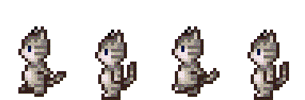

Ce dernier a pour but de vous apprendre à gérer des animations simplement grâce à un outil dont je suis l'auteur : SDLP_Anim. Les utilisateurs de Dev-C++ auront une petite surprise dans ce tutoriel (ils ont quand même de la chance ceux-là) ! Les autres, eh bien, tant pis pour eux, na ! :D Pour utiliser cet outil, vous aurez besoin d'avoir lu tout le tutoriel de M@teo21 sur le C/C++ (y compris la partie sur SDL).
La première chose à faire est de télécharger le fichier ZIP qui contient le header pour que nos fonctions fonctionnent. :p C'est ici : SDLP_Anim.zip ! Version actuelle de SDLP_Anim.h : 2.0 (2012).
Il se peut qu'une nouvelle version sorte et que vous ne le remarquiez pas. Dans ce cas, de nouvelles fonctions ajoutées dans ce tutoriel ne fonctionneront pas ! Il faudra alors remplacer l'ancien fichier par le nouveau qui est en téléchargement à côté de SDLP_Anim.zip.
Windows
Code::Blocks
Ouvrez le fichier compressé que vous avez téléchargé à l'aide de WinZip ou WinRar selon ce que vous avez. ;) Commencez par prendre en compte le fichier de license (GNU GPL). Je sais que vous ne le lirez pas mais par principe, il est là. Nous pouvons voir également 3 images différentes, conservez les car nous les utiliserons toutes pendant ce tutoriel. ;) Finalement il ne nous reste plus que les fichiers qui vous permettront de faire des animations !
Plaçons d'abord le fichier d'en tête SDLP_Anim.h ! Vous allez placer ce fichier comme suit : ..\mingw32\include\SDLP_Anim.h Ensuite, prenons notre deuxième fichier d'extension .a pour le mettre comme suit : ..\mingw32\lib\libSDLP_Anim.a
Et c'est tout ! :euh: :D
Dev-C++
La manipulation d'installation avec Dev-C++ est la même que celle de Code::Block. Vous devez placer vos deux fichiers dans le dossier mingw32 comme indiqué précédemment.
Après l'installation de l'astuce, voilà ce que ça donne :
Bon certes, il n'y a pas d'icône mais c'est très pratique car on n'a pas besoin d'inclure à la main -lmingw32 -lSDLmain et surtout d'en rappeler.
Visual C++ 2010 Express
Il n'y a pas grand-chose qui change si ce n'est que nous n'utilisons plus mingw32 mais VC. Mettez le header dans : ..\Microsoft Visual Studio 10\VC\include\SDLP_Anim.h Et le fichier .a dans ..\Microsoft Visual Studio 10\VC\lib\libSDLP_Anim.a
En général
Maintenant, nous allons configurer notre IDE favori. :) Pour se faire, il suffit de créer un projet, et comme avec M@théo21, de "linker" notre fichier .a ! Allez dans les configurations de votre projet, et à l'endroit correspondant où l'on rentre les fichiers .lib et .a. Vous pouvez maintenant ajouter le fichier .a dans cette liste. Ou copiez-collez cette ligne permettant de configurer les bibliothèques pour la SDL, SDL_image et SDLP_Anim : -lmingw32 -lSDLP_Anim -lSDLmain -lSDL -lSDL_image Enregistrez et le tour est joué ! ^^
Vous aurez ceci après vos manipulations (j'ai utilisé Dev-C++ mais ça devrait être presque pareil pour les autres) :
Exemple de placement des fichiers .a et .h pour mingw32
Mac OS (Xcode) & Linux
Je ne sais pas comment vous aider si vous êtes dans ce cas. :(
Vous avez tous remarqué que si, avec ce code, on blitte une image, elle va scintiller (si vous doutez, essayez :p ) ! On va régler tout ça en mettant en place le double buffering. :)
Vous n'allez devoir retenir qu'une seule structure. Voici un exemple de son utilisation.
SDLP_Anim *Anim;
On a créé notre surface Anim. Ça serait bien de libérer sa mémoire, non ? Pour cela, on va utiliser SDLP_FreeAnim ! Placez-le juste avant le SDL_Quit();.
SDLP_FreeAnim(Anim);
Et le tour est joué ! ;)
Maintenant, nous allons charger l'animation. Reprenez les images qui étaient dans le dossier compressé. Nous allons utiliser Feu.bmp. Je vais vous présenter le prototype de la fonction de chargement d'animation.
SDLP_Anim* SDLP_LoadAnim(char *SurfaceAnim, int nbPicture, int coter, long temps, int Loop, int Actif, int Util);
Vous allez définir toutes les options de l'animation :
char *SurfaceAnim : entrez ici le chemin de l'exécutable à l'image ;
int nbPicture : nombre d'images à séparer dans celle qui a été déclarée plus haut (l'image sera coupé en parts égales) ;
int coter : définir ici le sens de défilement. Utilisez les definesSDLP_GAUCHE, SDLP_DROITE, SDLP_HAUT ou SDLP_BAS. Si je prends SDLP_HAUT par exemple, l'animation sera coupée et animée de l'image tout en bas vers l'image tout en haut (on monte) ;
long temps : définir ici le temps entre chaque image (en millisecondes) ;
int Loop : choisir ici le nombre de fois où l'image va être animée. Utilisez SDLP_INFINI ou un nombre supérieur ou égal à 1. ;
int Actif : définir ici l'état de l'animation en utilisant SDLP_ARRETER, SDLP_PAUSE ou SDLP_LANCER ;
int Util : stipulez ici si l'animation doit se jouer seule ou à l'appui sur une touche. Utilisez les definesSDLP_NORMAL ou SDLP_TOUCHE.
N'oubliez pas que cette fonction retourne vos configurations vers une variable de type SDLP_Anim.
Voici les détails des différents états dont peuvent être assignés l'animation :
SDLP_ARRETER
Votre animation n'apparait pas/disparait. Celle-ci s'arrête et reviens à la 1ère image découpée. Si le nombre de boucles n'est pas infini, celui-ci revient au début.
SDLP_PAUSE
Votre animation reste présente mais se fige sur l'instant où elle était. Il n'y a pas d'écarts de temps et quand l'animation reprend, elle reprend là où elle s'était arrêtée. Le nombre de boucles est conservée.
SDLP_LANCER
Permet de lancer l'animation depuis n'importe quelle état.
Ça va ? Vous suivez ? N'hésitez pas à relire si cela s'avère nécessaire ! Ça devient intéressant, non ? :p
Maintenant, il faut définir la position de l'animation dans la fenêtre. Déclarez une variable du type SDL_Rect ! Faites comme moi, appelez-la pAnim.
SDL_Rect pAnim;
/* Chargement de l'animation. */
pAnim.x=0;
pAnim.y=0;
Nous avons chargé notre animation. Mais ce n'est que dans la « tête » de l'ordinateur ça. Nous, on veut que ça s'affiche, non ? NON ? :lol: Nous allons utiliser la fonction de blittage la plus simple qui n'ait jamais existé. :D Son prototype l'est aussi :
Renvoi une valeur de type INT. Comparez les comme ceci :
if (SDLP_GetEtatAnim(Anim)==SDLP_LANCER)
Voilà ! Nous avons nos fonctions maintenant. ;) Maintenant que vous savez faire des animations, nous allons mettre vos talents en pratique ! :p
Fonctions annexes
Ne grillez pas cette partie ! Plusieurs fonctions vous seront bien utiles (indispensables) pour gérer vos animations correctement. Imaginons-nous un problème. Vous savez comme moi que la largeur/hauteur d'une surface en SDL s'écrit de cette facon :
Imaginons-nous un autre problème à présent : Nous voudrions qu'au feu vert (pour reprendre l'exemple précédent), des voitures quelconques puissent passer, et pas au rouge, ni au orange. Il faudrait pouvoir savoir à quelle instance en est l'animation. Les fonctions suivantes vont répondre à notre problème :
int SDLP_GetIDAnim(SDLP_Anim *str);
int SDLP_GetIDMaxAnim(SDLP_Anim *str);
SDLP_GetIDAnim Retourne l'instance à laquelle est l'animation, alors que SDLP_GetIDMaxAnim retourne la valeur de la dernière instance existante (qui est égale au nombre de découpage).
Voici une image pour schématiser tout ça, à partir de notre feu habituel :
J'espère que ca sera plus clair pour vous avec cette image. ;)
Encore et toujours des problèmes ! Je voudrais bien que mon animation subisse la gestion de la transparence ! Tout d'abord, n'oubliez pas qu'il faut que votre image soit du format .bmp. Voici la fonction qui va vous sauver. N'oubliez pas de l'appeler après la déclaration de l'animation.
void SDLP_SetColorKeyAnim(SDLP_Anim *str, int R, int V, int B);
int R : Entrez ici la valeur de la couleur rouge sur laquelle il faudra pratiquer la transparence ;
int V : Entrez ici la valeur de la couleur verte sur laquelle il faudra pratiquer la transparence ;
int B : Entrez ici la valeur de la couleur bleue sur laquelle il faudra pratiquer la transparence.
C'est l'accouplement des trois couleurs qui formera la couleur finale sur laquelle la transparence doit s'effectuer.
Dernière fonction qui peut être utile. Lorsque vous chargez une animation, vous indiquez le temps de défilement entre chaque image. Le programme va vérifier si il doit blitter l'image correspondante. Pour éviter une surcharge du CPU, la fonction SDL_Delay est utilisée et est de valeur par défaut à 5ms. Comme tout le monde possède un ordinateur à peu près potable de notre temps, 5ms suffisent largement à ne pas tout faire ramer. Il existe cependant une fonction pour modifier ce temps de "Delay" :
int t : Entrez ici le temps en millisecondes d'attente entre chaque boucle.
Exercice
Maintenant, au boulot ! Je vous demande, à partir de Feu.bmp, de me faire un joli feu tricolore qui s'anime toutes les secondes, de sens DROITE et de durée infinie. Le feu tricolore doit être au centre de la fenêtre. De plus, je veux que quand on appuie sur la touche "entrée", l'animation se mette en pause et reprenne selon l'état. Vous êtes fins prêts, c'est parti ! :D
Correction
#include <stdlib.h>
#include <stdio.h>
#include <SDL.h>
#include <SDL_image.h>
#include <SDLP_Anim.h>
/* SDLP_ANIM.C
Créé par Syndrome5 (POPOP99O0)
Site du Zér0
*/
int main(int argc, char *argv[])
{
SDL_Surface *ecran = NULL;
SDL_Rect pAnim;
SDLP_Anim *Anim = NULL;
SDL_Event event;
int continuer = 1, NoRepeat=0;
SDL_Init(SDL_INIT_VIDEO);
ecran = SDL_SetVideoMode(200, 200, 32, SDL_HWSURFACE | SDL_DOUBLEBUF);
SDL_WM_SetCaption("Animations en SDL !", NULL);
Anim=SDLP_LoadAnim("Feu.bmp", 4, SDLP_DROITE, 1000, SDLP_INFINI, SDLP_LANCER, SDLP_NORMAL);
pAnim.x=ecran->w / 2 - SDLP_GetWSurfaceAnim(Anim) / 2;
pAnim.y=ecran->h / 2 - SDLP_GetHSurfaceAnim(Anim) / 2;
while (continuer)
{
SDL_PollEvent(&event);
switch(event.type)
{
case SDL_QUIT:
continuer = 0;
break;
case SDL_KEYDOWN:
switch (event.key.keysym.sym)
{
case SDLK_RETURN:
if (NoRepeat == 0)
{
if (SDLP_GetEtatAnim(Anim)==SDLP_ARRETER || SDLP_GetEtatAnim(Anim)==SDLP_PAUSE)
SDLP_SetEtatAnim(Anim, SDLP_LANCER);
else
SDLP_SetEtatAnim(Anim, SDLP_PAUSE);
NoRepeat=1;
}
break;
}
break;
case SDL_KEYUP:
NoRepeat=0;
break;
}
SDL_FillRect(ecran, NULL, SDL_MapRGB(ecran->format, 0, 0, 0));
SDLP_BlitAnim(Anim, ecran, pAnim);
SDL_Flip(ecran);
}
SDLP_FreeAnim(Anim);
SDL_Quit();
return EXIT_SUCCESS;
}
Notez que pour éviter la répétition de l'action de la touche en appuyant qu'une seule fois, j'ai fais ce petit système de boolean avec la variable NoRepeat.
Ce chapitre se termine ! Nous avons vu une forme d'animation automatisée par le temps. Dans le prochain chapitre, nous verrons un nouveau type d'animation : l'animation par évènement !
Nous allons à présent utiliser les deux images qui restaient dans SDLP_Anim.zip :
et

On va animer ce chat quand on appuiera sur une touche. C'est-à-dire que, quand on appuiera sur une touche, l'image s'animera. Je prends l'exemple de Zozor qui se déplace dans le tutoriel sur les événements de M@teo21. Il est statique quand il se déplace, l'image pourrait bouger et cela donnerait « vie » à l'image. C'est ce que j'appelle une animation par événement.
Mais j'y pense, on peut combiner plusieurs SDLP_SetEtatAnim pour gérer nous-même ces évènements !
Bravo si vous y avez pensé tout seul. Il est en effet possible par le biais de cette fonction de gérer des animations avec les évènements. Mais imaginons que vous ayez besoin ne serait-ce que cinq animations de ce type, imaginez le nombre de ligne de code pour ne gérer que l'affichage de ce dernier !
Pour pallier à ce problème, nous avons intégrer un système d'animation par évènement très simple d'utilisation et prenant peu d'espace (dans l'éditeur de texte, mais aussi dans votre mémoire).
Vous vous souvenez dans le chapitre précédent, nous déclarions nos animations de cette façon :
Vous connaissez chaque paramètre de la fonction, mais nous sommes passé très rapidement sur le dernier sans le détailler. Sachez que c'est d'abord ici que vous allez dire à votre programme "Je veux une animation par évènement".
Pour se faire, c'est très simple. Nous allons remplacer SDLP_NORMAL par SDLP_TOUCHE. Ceci fait, vous deviez avoir cette ligne :
Si vous compilez maintenant votre code, à votre grande surprise, l'image s'affiche à l'instance 0 (première image) mais ne défile plus. Rien de plus normal ! L'animation attend maintenant un évènement pour se lancer.
Revenons à présent sur notre exemple du chat souhaitant courir. :) Pour nous simplifier la vie, nous ne prendrons pour le moment que l'image du chat qui regarde vers la droite. De plus, on modifie la déclaration de l'animation pour indiquer que l'on va utiliser la gestion par évènement.
Vous pouvez également compiler ce code, qui ne donnera rien qu'une image fixe ! Nous allons par contre reprendre cet exemple tout au long du chapitre. Je vous conseille donc de copier/coller ce bout de code.
Bon, comment on l'anime cette image finalement ?!
Je vois que vous commencez à vous vous impatienter. :D Alors on est parti !
À l'aide d'une fonction appelée SDLP_Touch, vous allez pouvoir gérer l'événement sans rien faire ; la fonction fait tout. ;)
void SDLP_Touch(SDL_Event event, SDLP_Anim *str);
SDL_Event event : variable de type SDL_Event qui gère tous les événements ;
SDLP_Anim *str : variable de type SDLP_Anim.
Voilà, il ne reste plus qu'à placer la fonction et le tour est joué ! Puisque cette fonction agit en fonction des évènements, vous devrez la placer après le switch event.type comme ceci :
Résultat : Lorsqu'on reste appuyé sur n'importe quelle touche, le chat s'anime bien ! Faisons maintenant en sorte que lorsqu'on appuie sur les touches directionnelles gauche et droite, il se déplace dans le sens correspondant à la touche !
Je suis gentil, alors je donne ce petit bout de code misérable.
case SDL_KEYDOWN:
switch (event.key.keysym.sym)
{
case SDLK_RIGHT:
pAnim.x+=2;
break;
case SDLK_LEFT:
pAnim.x-=2;
break;
default:
break;
}
break;
Ajoutez ceci à votre code. Vous pouvez maintenant observer que notre chat se déplace bien en effectuant son animation et, quand on relâche la touche, l'animation revient au départ. On peut même voir que notre chat fait du moonwalk ! :p
C'est bien gentil tout ça, mais je vois qu'il y a un problème, quand j'appuie sur une autre touche que gauche ou droite, l'animation se met en route quand même !
Vous avez de l’œil dites moi aujourd'hui ! Heureusement, une fonction va vous sauver :
void SDLP_BlockTouch(SDLP_Anim *str);
SDLP_Anim *str : variable de type SDLP_Anim.
Mais je la place où cette fonction moi ?
A chaque endroit où vous ne voulez pas que l'animation se produise. En l'occurrence, ce sera souvent dans votre default: puisque l'on choisis la réalisation de l'évènement sur quelques touches uniquement. On exclut donc toutes les touches sauf celles précédés du default: !
Finalement, on obtient ceci :
#include <stdlib.h>
#include <stdio.h>
#include <SDL.h>
#include <SDL_image.h>
#include <SDLP_Anim.h>
/* SDLP_ANIM.C
Créé par Syndrome5 (POPOP99O0)
Site du Zér0
*/
int main(int argc, char *argv[])
{
SDL_Surface *ecran = NULL;
SDL_Rect pAnim;
SDLP_Anim *Anim = NULL;
SDL_Event event;
int continuer = 1;
SDL_Init(SDL_INIT_VIDEO);
ecran = SDL_SetVideoMode(400, 400, 32, SDL_HWSURFACE | SDL_DOUBLEBUF);
SDL_WM_SetCaption("Animations en SDL !", NULL);
Anim=SDLP_LoadAnim("CatD.png", 4, SDLP_GAUCHE, 150, SDLP_INFINI, SDLP_LANCER, SDLP_TOUCHE);
pAnim.x=0;
pAnim.y=ecran->h - SDLP_GetHSurfaceAnim(Anim);
while (continuer)
{
SDL_PollEvent(&event);
switch(event.type)
{
case SDL_QUIT:
continuer = 0;
break;
case SDL_KEYDOWN:
switch (event.key.keysym.sym)
{
case SDLK_RIGHT:
pAnim.x+=2;
break;
case SDLK_LEFT:
pAnim.x-=2;
break;
default:
SDLP_BlockTouch(Anim);
break;
}
break;
}
SDLP_Touch(event, Anim);
SDL_FillRect(ecran, NULL, SDL_MapRGB(ecran->format, 255, 255, 255));
SDLP_BlitAnim(Anim, ecran, pAnim);
SDL_Flip(ecran);
}
SDLP_FreeAnim(Anim);
SDL_Quit();
return EXIT_SUCCESS;
}
Bon c'est bien beau tout ça, mais est-ce vraiment réaliste que notre chat fasse le moonwalk ? Ceux qui me réponde "oui", je leur conseille d'arrêter le cannabis tout de suite. ;) Et comme moi j'ai assez travaillé pour aujourd'hui, c'est vous qui allez me faire ce chat qui marche normalement.
Exercice 1 : terminer le programme
Il faut penser à utiliser la deuxième image à votre disposition. Vous pouvez changer le code comme vous voulez et même tout recommencer ; c'est ce que je vous conseille d'ailleurs ! À vous de voir. Au moins, vous aurez le mérite d'avoir tout fait tout seul. A vos curseurs ! Vous avez tout pour y arriver, alors faites-moi ce chat, et plus vite que ça !
Correction
Voilà la correction de mon casse-tête. Vous n'étiez pas obligés de faire exactement la même chose. Si vous ne comprenez pas mon code, relisez le chapitre avec plus de concentration.
Vous avez réussi l'exercice 1 sans problème ? Alors nous allons maintenant mêler nos connaissances. L'idée est la suivante : Notre chat va faire une course seul ( o_O ). Il démarre à gauche de la fenêtre et son but est d'arriver à droite. Lorsqu'il arrive, le feu disparait. Cependant, celui-ci ne doit partir qu'au feu vert. Sinon il est bloqué. Là aussi vous avez les capacités pour y arriver sans aide supplémentaire ! Au travail ! Conseil : Basez vous à partir du code de l'exercice 1. Petit screen du résultat possible :
Correction
Je relève les copies. :p Pour ma part, voici mon code :
Rien de très bien compliqué, il suffit juste de bien connaître ses fonctions !
J'espère que vous avez tout retenu (mais je vous laisse revenir, au cas où). Il y a pas mal de fonctions ; je ne vous oblige pas à toutes les retenir !
C'est ici que nous nous quittons. J'espère vous avoir aidé ! À bientôt.